The following Modules are included in a default install of Bodhi Linux:
Utilities | ||
| Module | Gadget | Description |
| Backlight | Backlight control slider gadget | |
| Clock | Analog clock by default, but also has a digital alternative. | |
| Engage | Dock that supports compositing and no compositing for the Enlightenment desktop | |
| IBar | 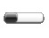 | Iconic application launcher (dock) |
| IBox | A home for your iconic applications | |
| Pager | 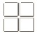 | Gadget to allow you to visualize your Virtual Desktops and the windows they contain |
| Shot | 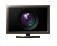 | Simple screenshot+save/upload Module with Main Menu entry |
| Start | E17's "Start" button equivalent | |
| Systray | System tray that holds application icons like Skype, Pidgin, Kopete and others | |
| Tasks | Gadget to allow you to switch between tasks | |
| iTask | 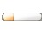 | It will hold all your open applications for fast switching |
| Forecasts | Get weather updates on your desktop | |
| Keyboard | 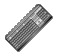 | Keyboard layout configuration and switcher |
System | ||
| Battery | 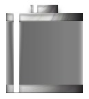 | A Gadget to visualize your battery status |
| CPUfreq | 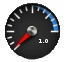 | Gadget to monitor and change the CPU frequency |
| Mixer | A module to provide a mixer for changing volume | |
| Temperature | 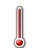 | Temperature monitor |
| DBus Extension | ||
Look | ||
| Composite | 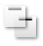 | Enlightenment Composite manager |
| DropShadow | Module to add dropshadow to windows | |
| Scale Windows | Scale windows down to see them all side by side | |
Files | ||
| EFM (Starter) | 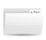 | Enlightenment's integrated file manager |
| EFM Operation Info |  | Can only be placed on the desktop |
| Places | 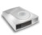 | Display the status of your drives, mount and unmount/eject them |
Launcher | ||
| Everything (starter) | The run command module provides an application launcher dialog | |
| Quickaccess | Enlightenment Quickaccess Launcher | |
Core | ||
| Bodhi Close |  | Gadget to provide quick access to close the currently active application |
| Gadgets |  | Module to manage Gadgets on the desktop |
| Notification | notification-daemon alternative; Popup if an event occurs | |
| Settings Panel | 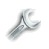 | General Enlightenment configuration panel |
| System Controls | | This module provides a unified popup dialog for all system actions in Enlightenment |
| Tiling | Positions/resizes your windows tilingly | |
| Window Switcher | 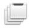 | A module to show the list of client applications presently running |
Mobile | ||
| Elfe | Launcher for tablet profile | |
| Illume-Bluetooth | 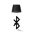 | Control bluetooth devices in Illume. |
| Illume-Home | Default home launcher of Illume. Not used by default in Bodhi's Tablet profile. | |
| Illume-Home-Toggle | A button to return to the home screen of Illume | |
| Illume-Indicator | The top panel of Illume. | |
| Illume-Keyboard | 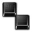 | An on-screen keyboard. |
| Illume-Keyboard-Toggle | A button to call up the on-screen keyboard. | |
| Illume-Mode-Toggle | 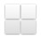 | A gadget to put the Illume desktop into split-mode. Not used by default in Bodhi's Tablet profile. |
| Illume-Softkey | 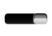 | A bottom bar for Illume. Not used by default in Bodhi's Tablet profile. |
| Illume2 | 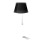 | The module that handles stripping window borders and maximizing all windows. |
Settings | ||
| Applications | Allows configuration of Ibar, Restart, and Startup Applications | |
| Dialogs | Configure default dialog properties | |
| Edge Bindings | Configure your edge binding settings here | |
| Input Control Settings | 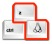 | Key, Mouse and Button Control settings |
| Interaction | Configure Mouse and Touch input | |
| Language | Used to set default language | |
| Menu Settings | 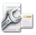 | Configures menu behavior |
| Performance | 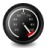 | Used to configure certain performance related items such as frame rates and cache settings |
| Screen | 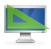 | Used to configure your screen |
| Search Directories | Specifies the E17 search paths and default directories | |
| Settings - Screen Setup | 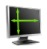 | Used to configure your screen's resolution and set up multiple monitors |
| Shelves | Shelf configuration dialog | |
| Theme | Used to configure your theme preferences | |
| Window Manipulation | Configures window raise, resistance, and maximize policies | |
| Window Remembers | 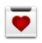 | Delete existing window remembers |
| The following Modules are available to install from the Bodhi Linux repositories: | ||
| Taskbar | Gadget to provide a taskbar that shows running applications | |
| TClock | A digital clock Gadget | |
| DiskIO | 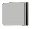 | Module to show disk activity |
| Mem | 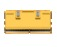 | Real time memory updates on your E17 desktop |
| News | RSS feeds for your desktop | |
| Moon | 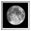 | View the current cycle of the moon on your desktop |
| Check email on your Enlightenment desktop | ||
| CPU | 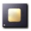 | Module for measuring CPU usage |
| Snow | Perfect for winter time. Bring snow and fun to your desktop | |
| Flame | Set fire to your desktop | |
| Rain | Clouds and rain for your desktop | |
| Photo | 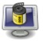 | Module to display a slideshow on your desktop |
| Slideshow | 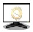 | Enlightenment slideshow module |
| Deskshow | 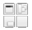 | Gadget to allow you to quickly uncover your desktop |
| Everything-Tracker | Search files with tracker (0.8), which also features a music browser | |
| Everything-MPRIS | 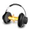 | Manage the playlist of MPRIS aware music players (Amarok, Audacious, xmms2, ...) |
| Everything-Places | Module to extend Run Everything | |
| Everything-Websearch | Find stuff from Wikipedia, use google suggestions or "Google for it"TM, translate text, and search/browse through Youtube | |
| Everything-Wallpaper | 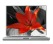 | Module to extend Run Everything |
| Everything-Pidgin | Open chat window or send files to buddies with Pidgin | |
{kind=link}
{kind=link}
{kind=link}
{kind=link}
{kind=link}
{kind=link}
{kind=link}
{kind=link}
{kind=link}
{kind=link}
{kind=link}
{kind=link}
{kind=link}
{kind=link}
{kind=link}
{kind=link}
{kind=link}
{kind=link}
{kind=link}
{kind=link}
{kind=link}
{kind=link}
{kind=link}
{kind=link}
{kind=link}
{kind=link}
{kind=link}
{kind=link}
{kind=link}
{kind=link}
{kind=link}
{kind=link}
{kind=link}
{kind=link}
{kind=link}
{kind=link}
{kind=link}
{kind=link}
{kind=link}
{kind=link}
{kind=link}
{kind=link}
{kind=link}
{kind=link}
{kind=link}
{kind=link}
{kind=link}
{kind=link}
{kind=link}
{kind=link}
{kind=link}
{kind=link}
{kind=link}
{kind=link}
{kind=link}
{kind=link}
{kind=link}
{kind=link}
{kind=link}
{kind=link}